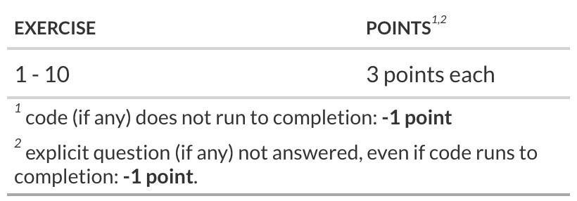

# check if 'librarian' is installed and if not, install it
if (! "librarian" %in% rownames(installed.packages()) ){
install.packages("librarian")
}
# load packages if not already loaded
librarian::shelf(tidyverse, magrittr, tidymodels, modeldata, ranger, rsample, broom, recipes, parsnip)
# set the default theme for plotting
theme_set(theme_bw(base_size = 18) + theme(legend.position = "top"))Lab 4 - The Models package
SOLUTIONS
Introduction
In today’s lab, you’ll practice building workflowsets with recipes, parsnip models, rsample cross validations, model tuning and model comparison.
Learning goals
By the end of the lab you will…
- Be able to build workflows to evaluate different models and featuresets.
Packages
The Data
Today we will be using the Ames Housing Data.
This is a data set from De Cock (2011) has 82 fields were recorded for 2,930 properties in Ames Iowa in the US. The version in the modeldata package is copied from the AmesHousing package but does not include a few quality columns that appear to be outcomes rather than predictors.
dat <- modeldata::amesThe data dictionary can be found on the internet:
cat(readr::read_file("http://jse.amstat.org/v19n3/decock/DataDocumentation.txt"))Exercise 1: EDA
Write and execute the code to perform summary EDA on the Ames Housing data using the package skimr.
Exercise 2: Train / Test Splits
Write and execute code to create training and test datasets. Have the training dataset represent 75% of the total data.
Exercise 3: Data Preprocessing
create a recipe based on the formula Sale_Price ~ Longitude + Latitude + Lot_Area + Neighborhood + Year_Sold with the following steps:
- transform the outcome variable
Sale_Pricetolog(Sale_Price)(natural log) - center and scale all numeric predictors
- transform the categorical variable
Neighborhoodto pool infrequent values (seerecipes::step_other) - create dummy variables for all nominal predictors
Finally prep the recipe.
Make sure you consider the order of the operations (hint: step_dummy turns factors into multiply integer (numeric) predictor, so consider when to scale numeric predictors relative to creating dummy predictors.
You can use broom::tidy() on the recipe to examine whether the prepped data is correct.
Exercise 4 Modeling
Create three regression models using the parsnip:: package and assign each model to its own variable
- a base regression model using
lm - a regression model using
glmnet; set the model parameterspenaltyandmixturefor tuning - a tree model using the
rangerengine; set the model parametersmin_nandtreesfor tuning
Exercise 5
Use parsnip::translate() on each model to see the model template for each method of fitting.
Exercise 6 Bootstrap
Create bootstrap samples for the training dataset. You can leave the parameters set to their defaults
Exercise 7
Create workflows with workflowsets::workflow_set using your recipe and models. Show the resulting datastructure, noting the number of columns, and then use tidyr:: to unnest the info column and show its contents.
Exercise 8
Use workflowsets::workflow_map to map the default function (tune::tune_grid() - look at the help for workflowsets::workflow_map ) across the workflows in the workflowset you just created and update the variable all_workflows with the result.
all_workflows <- all_workflows |>
workflowsets::workflow_map(
verbose = TRUE # enable logging
, resamples = train_resamples # a parameter passed to tune::tune_grid()
, grid = 5 # a parameter passed to tune::tune_grid()
)i No tuning parameters. `fit_resamples()` will be attemptedi 1 of 3 resampling: base_base✔ 1 of 3 resampling: base_base (806ms)i 2 of 3 tuning: base_glmnet→ A | warning: A correlation computation is required, but `estimate` is constant and has 0
standard deviation, resulting in a divide by 0 error. `NA` will be returned.There were issues with some computations A: x1There were issues with some computations A: x25✔ 2 of 3 tuning: base_glmnet (2.7s)i 3 of 3 tuning: base_forest✔ 3 of 3 tuning: base_forest (1m 11s)The updated variable all_workflows contains a nested column named result, and each cell of the column result is a tibble containing a nested column named .metrics. Write code to
- un-nest the metrics in the column .metrics
- filter out the rows for the metric rsq
- group by wflow_id, order the .estimate column from highest to lowest, and pick out the first row of each group.
Exercise 9
Run the code below and compare to your results from exercise 8.
Exercise 10
Select the best model per the rmse metric using its id.
Grading
Total points available: 30 points.
